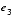
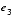
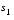
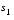

SD - JiniTM Service Discovery Utilities Specification
SD.1 Introduction
This specification defines helper utility classes, along with supporting interfaces and classes, that encapsulate functionality that can help a JiniTM technology-enabled service or client (Jini service or Jini client) in acquiring services of interest that are registered with the various lookup services with which the service or client wishes to interact. Currently, the service discovery utilities specification defines only one helper utility class:
SD.2 The ServiceDiscoveryManager
The interactions of an entity that operates in a client-like fashion within a JiniTM application environment are generally distinguished by the fact that the entity first discovers one or more Jini lookup services, then queries one or more of the discovered lookup services for references to Jini services that the entity may employ in some task. This process, in which Jini services as well as Jini clients may participate, is often referred to as service discovery. Since services and clients can perform both lookup discovery and service discovery, the primary characteristic that distinguishes a Jini service from a client is the service's ability to be registered with a lookup service. Thus, with respect to service discovery, there is no difference between a Jini service and a Jini client.
Because there is no need to make such a distinction, the terms entity and client-like entity will be used interchangeably throughout this specification to refer to Jini clients or services that create an instance of the ServiceDiscoveryManager (from the package net.jini.lookup) and use the public methods of that class to perform and manage their service discovery duties.
Once a client-like entity discovers a set of lookup services and retrieves references to desired services from those lookup services, the entity may choose to discontinue query-related discovery processing. That is, having obtained references to all of the services it wishes to employ, the entity may view the references it holds to the lookup services as no longer necessary.
But over the execution life of any such entity, partial failures such as system crashes or network outages may intermittently affect the availability of some of those services of interest. This results in a need to re-query the lookup services to find references to new instances of the service that can replace the unavailable instance. Such scenarios make it desirable for a client-like entity to maintain its references to the lookup services it queries. If an instance of a service is found to be unavailable, the entity can query those lookup services to obtain an instance of the service that is available.
Since a query on a lookup service is a remote call, such calls are much more costly in terms of overhead and failure risk than are local calls. This cost is magnified when an entity must make frequent queries for multiple services, so an entity may find it desirable to cache the services it obtains from the original queries on the lookup services. Furthermore, by populating the cache with multiple instances of the desired services, redundancy in the availability of those services can be provided. Thus, if an instance of a service is found to be unavailable when needed, the entity can execute a local query on the cache rather than one or more remote queries on the lookup services to obtain an instance which is available.
Typically, an entity will request the creation of a separate cache for each service type of interest. The cache provides a method with which the entity can retrieve an element of the cache. In general, the particular service reference that is returned should not matter to the entity. It should only matter that a service reference has been returned, not which service reference. If for some reason it does matter to an entity which service reference is returned, then the cache also provides a mechanism that will allow the entity to retrieve all elements of the cache. The entity can then iterate through each element, selecting the particular reference it desires.
Although interacting with a local cache of services in this way can be very useful to entities that need frequent access to multiple services, some client-like entities may wish to interact with the cache in a reactive manner. For example, an entity such as a service browser typically wishes to be notified of the arrival of new services of interest as well as any changes in the state of the current services in the cache. Polling for such changes is usually viewed as undesirable. If the cache were to also provide an event mechanism with notification semantics, the needs of both types of entity could be satisfied.
From the scenarios discussed above, one could conclude that when acting in a client-like fashion, it is desirable for an entity to maintain, as much as possible, up-to-date knowledge of the availability of the lookup services of interest as well as the state information associated with all other types of services in which the entity is interested. By maintaining current service state information, the entity can implement efficient mechanisms for service access and usage.
The ServiceDiscoveryManager class is a helper utility class that any entity can use to create and populate a cache such as that described previously, and with which the entity can register for notification of the availability of services of interest. Like the JoinManager utility class, this class needs to be notified when a desired lookup service is discovered. For information on the JoinManager utility class, refer to the Jini Join Utilities Specification.
Unlike the JoinManager, the ServiceDiscoveryManager does not register the entity as a service with discovered lookup services. Although both the JoinManager and the ServiceDiscoveryManager perform lookup discovery event handling for the entities that employ them, the JoinManager performs join processing for Jini services, while the ServiceDiscoveryManager performs service discovery and management processing both for clients and for services. Thus, typical usage patterns for Jini services wishing to find and use other Jini services generally indicate the employment of both the JoinManager and the ServiceDiscoveryManager utilities, whereas Jini clients would typically use only the ServiceDiscoveryManager.
The ServiceDiscoveryManager class can be asked to "discover" services an entity is interested in using, and to cache the references to those services as each is found. The cache can be viewed as a set of service references that the entity can access locally as needed through one of the public, non-remote methods provided in the cache's interface. A service reference added to the cache will be removed from the cache when all of the lookup services with which that service is registered have been discarded.
The ServiceDiscoveryManager class also provides a mechanism for an entity to request that it be notified when a service of interest is discovered for the first time or has encountered a state change such as removal from all lookup services or attribute set changes.
For convenience, this class also provides versions of a method named lookup, which employs invocation semantics similar to the semantics of the lookup method of the ServiceRegistrar interface defined in the Jini Lookup Service Specification. This method may be useful to entities that need to find services on an infrequent basis, or when the cost of making a remote call is outweighed by the overhead of maintaining a local cache (for example, because of limited resources).
All three mechanisms described above--local queries on the cache, service discovery notification, and remote lookups--employ the same template matching scheme as that described in the Jini Lookup Service Specification. Additionally, each mechanism allows the entity to supply an object referred to as a filter. Such an object is a non-remote object that defines additional matching criteria that the ServiceDiscoveryManager applies when searching for the entity's services of interest. This filtering facility is particularly useful to entities that wish to extend the capabilities of the standard template matching scheme.
The ServiceDiscoveryManager is a utility class, not a remote service. Client-like entities that wish to use this utility will create an instance of the ServiceDiscoveryManager in the entity's address space so as to manage the entity's "lookup state" locally.
SD.2.1 The Object Types
The types defined in the specification of the ServiceDiscoveryManager utility class are in the net.jini.lookup package. The following types may be referenced in this chapter. Whenever referenced, these object types will be referenced in unqualified form:
net.jini.core.discovery.LookupLocator net.jini.core.lease.Lease net.jini.core.lookup.ServiceEvent net.jini.core.lookup.ServiceItem net.jini.core.lookup.ServiceMatches net.jini.core.lookup.ServiceRegistrar net.jini.core.lookup.ServiceTemplate net.jini.config.Configuration net.jini.config.ConfigurationException net.jini.discovery.DiscoveryListener net.jini.discovery.DiscoveryManagement net.jini.discovery.LookupDiscoveryManager net.jini.io.MarshalledInstance net.jini.lease.LeaseRenewalManager net.jini.lookup.LookupCache net.jini.lookup.ServiceDiscoveryEvent net.jini.lookup.ServiceDiscoveryListener net.jini.lookup.ServiceItemFilter net.jini.security.ProxyPreparer java.io.IOException java.rmi.server.UnicastRemoteObject java.rmi.MarshalledObject java.rmi.RemoteException java.util.EventListener java.util.EventObject java.util.Set
SD.3 The Interface
The public interface provided by the ServiceDiscoveryManager class defines methods that allow an entity to request that references to services matching criteria defined by the entity be found in discovered lookup services and cached for local retrieval. This interface also defines methods for retrieving the manager objects employed by this utility, and for performing termination processing.
package net.jini.lookup;
public class ServiceDiscoveryManager {
public ServiceDiscoveryManager
(DiscoveryManagement discoveryMgr,
LeaseRenewalManager leaseMgr)
throws IOException {...}
public ServiceDiscoveryManager
(DiscoveryManagement discoveryMgr,
LeaseRenewalManager leaseMgr,
ConFiguration config)
throws IOException, ConfigurationException {...}
public LookupCache createLookupCache
(ServiceTemplate tmpl,
ServiceItemFilter filter,
ServiceDiscoveryListener listener)
throws RemoteException {...}
public ServiceItem lookup(ServiceTemplate tmpl,
ServiceItemFilter filter) {...}
public ServiceItem lookup(ServiceTemplate tmpl,
ServiceItemFilter filter,
long waitDur)
throws InterruptedException,
RemoteException {...}
public ServiceItem[] lookup
(ServiceTemplate tmpl,
int maxMatches,
ServiceItemFilter filter) {...}
public ServiceItem[] lookup(ServiceTemplate tmpl,
int minMatches,
int maxMatches,
ServiceItemFilter filter,
long waitDur)
throws InterruptedException,
RemoteException {...}
public DiscoveryManagement getDiscoveryManager() {...}
public LeaseRenewalManager getLeaseRenewalManager() {...}
public void terminate() {...}
}
SD.4 The Semantics
The ServiceDiscoveryManager makes certain concurrency guarantees with respect to the methods it defines. When a method of ServiceDiscoveryManager invokes a remote method, although such an invocation may block other remote calls made in the ServiceDiscoveryManager, invocations of local methods will not be blocked.
SD.4.1 The Methods
The ServiceDiscoveryManager helper utility class defines a number of public methods in addition to its constructor. This utility defines a factory method that allows the entity to create a local cache for storing references to desired services that have been previously discovered. Additionally, this class defines a set of methods that the entity may use to query (remotely) each discovered lookup service for other services that are of interest to the entity.
The equals method for the ServiceDiscoveryManager class returns true if and only if two instances of this class refer to the same object. That is, x and y are equal instances of this class if and only if x == y has the value true.
SD.4.1.1 The Constructor
The constructor for ServiceDiscoveryManager has two versions. Each version of the constructor throws IOException because construction of a ServiceDiscoveryManager may initiate the multicast discovery process, a process that can throw IOException.
The only difference between the two versions of the constructor is the absence or presence of a parameter of type Configuration, which is used to classify the constructors as either non-configurable or configurable, respectively.
The input parameters shared by both versions of the constructor are as follows:
- An instance of
DiscoveryManagement, through which notifications that indicate a lookup service has been discovered or discarded will be received - An instance of
LeaseRenewalManager, which is used by theServiceDiscoveryManagerto manage the leases on any event registrations requested by theServiceDiscoveryManagerfrom the lookup services with which it interacts.
It is important to note that at a minimum, the object input as the first argument of either version of the constructor must satisfy the contract defined in the DiscoveryManagement interface. That is, that object must provide the ServiceDiscoveryManager with the ability to set discovery listeners and to discard previously discovered lookup services when they are found to be unavailable.
For either version of the constructor, null may be passed as the DiscoveryManagement argument. If that argument is null, an instance of the LookupDiscoveryManager utility class will be constructed to discover only those lookup services that are members of the public group, unless, in the case of the configurable version of the constructor, this default behavior is overriden through the use of the configuration mechanism (see below).
For either version of the constructor, null may be passed as the LeaseRenewalManager argument. If that argument is null, an instance of the LeaseRenewalManager class will be created, initially managing no Lease objects.
As noted, the configurable version of the constructor is characterized by an additional parameter of type Configuration. Through that parameter, the configurable version of the constructor can be used to customize the behavior of the resulting ServiceDiscoveryManager instance. Such customizations are implementation dependent. A NullPointerException is thrown if null is passed as the value of that parameter. A ConfigurationException is thrown to indicate that a problem occurred while attempting to retrieve an item from the given Configuration.
Creating a ServiceDiscoveryManager using the non-configurable version of the constructor will result in a ServiceDiscoveryManager having only basic, default behavior. Thus, the use of the configurable version of the constructor is strongly encouraged.
SD.4.1.2 The createLookupCache Method
The createLookupCache method allows an entity to request that the ServiceDiscoveryManager create a new managed set (or cache) and populate it with services, which match criteria defined by the entity, and whose references are registered with one or more of the lookup services the entity has targeted for discovery.
This method returns an object of type LookupCache. Through this return value, the entity can query the cache for services of interest, manage the cache's event mechanism for service discoveries, or terminate the cache. The definition of the LookupCache interface is presented later in this specification.
An entity typically uses the object returned by this method to provide local storage of, and access to, references to services that it is interested in using. Entities that need frequent access to numerous services will find the object returned by this method quite useful because acquisition of those service references is provided through local method invocations. Additionally, because the object returned by this method provides an event mechanism, it is also useful to entities wishing to simply monitor, in an event-driven manner, the state changes that occur in the services of interest.
The createLookupCache method takes three arguments: an instance of ServiceTemplate, an instance of ServiceItemFilter, and an instance of ServiceDiscoveryListener. Both the interfaces ServiceItemFilter and ServiceDiscoveryListener are presented later in this chapter.
Together, the tmpl and the filter arguments define the criteria that service references must satisfy to be discovered. The listener argument references an object that will receive notifications when services that satisfy the input criteria are discovered for the first time, or have encountered a state change such as removal from all lookup services or attribute set changes. If null is input to the listener argument for a particular invocation of this method, the cache resulting from that invocation will send no such notifications.
The tmpl argument employs template matching semantics that are identical to the semantics described in the Jini Lookup Service Specification, Section LU.2.3, "ServiceTemplate and Item Matching") to identify the service(s) to acquire from lookup services in the managed set. The object passed to the filter argument is then used to apply additional criteria that must be satisfied by any service references found through template matching. The additional criteria defined by the filter parameter are application-specific, and therefore must be defined by the client-like entity itself (as described in Section SD.5.2, "The ServiceItemFilter Interface"). Furthermore, once an instance of the cache is created, the filter associated with that instance will not change during the life of that particular cache. If the filter is changed so that its original behavior is modified, the effect on the cache is undefined.
As a convenience, a null reference input to the tmpl argument is treated as equivalent to inputting a ServiceTemplate constructed with all null arguments (all wildcards). That is, the cache will attempt to discover all services contained in each lookup service in the managed set. If a null value is passed as the filter argument, then only template matching will be employed to find the desired services.
Entities that invoke this method must take care not to modify the contents of the object input through the tmpl parameter after the cache has been created. Doing so could cause the state of the cache to become corrupted or inconsistent. It is for this reason that the effects of modifying the contents of the tmpl parameter, after this method is invoked, are undefined.
To keep its contents up to date, the cache must register with the event mechanism of each lookup service in the managed set. From the point of view of the cache, a service is "discovered" when it receives a remote event from one of those lookup services notifying the cache of the existence of a service matching the input criteria. In addition, whenever one of the cache's discovered services experiences a state change in one of the lookup services in which it is registered, the cache will receive a remote event identifying that state change whenever the change satisfies the matching criteria.
For a number of reasons the cache may receive multiple events corresponding to the same Jini service. For example, a particular Jini service may be registered with more than one lookup service from the managed set. If the cache requests events from each lookup service using a template configured with no restriction along the service ID search axis and little or no restriction along the attribute search axis, the cache will receive a notification each time one of the following events occurs at any of the those lookup services:
- The service, matching the template, is registered with one of the lookup services.
- The lease of the matching service is cancelled or expires.
- An attribute set associated with the matching service is modified in some way.
Just as the cache requests that it be notified of state changes in matching services occurring within each lookup service, an entity may request that the cache deliver events that indicate analogous state changes in the service references stored in the cache.
There are two significant differences in the event mechanism between the lookup services and the cache, and the event mechanism between the cache and the client-like entity. First and foremost, the events sent from the lookup services to the cache are remote events, whereas the events sent from the cache to the entity are local events. Second, each registration or state-change event sent from the cache to the entity may actually have been a result of multiple corresponding events received by the cache from a set of lookup services. Thus, there is a many-to-one relationship between the events received by the cache and the events sent by the cache.
For many entities that use the cache's event mechanism to interact with the cache's discovered services, knowledge of the number of distinct service references, as well as identification of the lookup services with which those references are registered, is of no interest. Such entities typically are interested only in acquiring a reference--not all references--to the desired services. Thus, the relationship between the two event mechanisms described previously allows the ServiceDiscoveryManager to hide the lookup services with which the cache interacts from the entity. For entities that are interested in the additional information, the cache provides methods separate from the event mechanism for obtaining such information.
To summarize, although the cache may receive multiple events signaling a state change related to a particular matching service, the cache will typically send only a single corresponding event to the entity. That is, for any matching service:
- The cache will send a service discovery event to the entity only once: after the cache acquires the first reference to the matching service.
- The cache will send a service removal event to the entity only once: after every reference to the service has had its lease expire or cancelled; that is, only after all references to the matching service have been removed from every lookup service in the cache's managed set.
- For each set of event(s) notifying the cache that a particular modification has been made to the attribute set associated with one of the service references, one service modification event will be sent to the entity, but only if the attribute set state reflected in the received event represents an actual change in the service's current attribute set state (as maintained by the cache).
With respect to the state of the attribute sets associated with the service references stored in the cache, the cache should be viewed as maintaining a single attribute set state for each collection of service references that represent the same service. That single state will always be equivalent to the state reflected in the last attribute set modification event received by the cache.
For example, suppose each of three different references to a service that matches the input criteria is registered with three lookup services in the managed set. Suppose the attribute sets associated with each service reference are modified in exactly the same way. For this specific case, the cache would receive three events--one from each lookup service--signaling these modifications. Upon receipt of the first event, the cache modifies its current notion of the service's attribute set state, and then notifies the entity of the change, but only if the state reflected in the event represents a change in the current state. Because the remaining two events received by the cache represent the same state change as that represented in the first event, the cache sends no other notification.
Next, suppose a second modification, different from the first, is made on only two of the service references, and a third unique modification is made on the remaining service reference. In this case, the cache will still receive three events, but how the cache handles the events is dependent on the order of arrival of the events. For simplicity, call the three events  ,
,  , and 
. Use
, and 
. Use  to represent the cache's current notion of the service's attribute set state, and use
to represent the cache's current notion of the service's attribute set state, and use  and
and  to represent the states resulting after each attribute modification has occurred. In this example,
to represent the states resulting after each attribute modification has occurred. In this example,  and
and  will be sent to the cache after each of the service's attribute sets is modified to 
in their respective lookup services. Event
will be sent to the cache after each of the service's attribute sets is modified to 
in their respective lookup services. Event  is sent after the service's attribute sets are modified to
is sent after the service's attribute sets are modified to  in the remaining lookup service.
in the remaining lookup service.
If the order of arrival is  ,
,  , and then
, and then  , the cache will change
, the cache will change  into
into  and notify the entity after the arrival of
and notify the entity after the arrival of  but will do nothing upon the arrival of
but will do nothing upon the arrival of  . Upon the arrival of
. Upon the arrival of  , the cache will change
, the cache will change  (which is now
(which is now  ) into
) into  . If the order of arrival of the events is
. If the order of arrival of the events is  ,
,  , and then
, and then  , the cache will first change
, the cache will first change  into
into  , then into
, then into  , and then back into
, and then back into  again. Furthermore, for each state change made, the cache will send a notification to the entity.
again. Furthermore, for each state change made, the cache will send a notification to the entity.
Thus, the events generated by the cache's event mechanism and sent by the cache to the entity are more representative of the state changes that occur in the cache than in the lookup services.
An entity may register for events from the cache in one of two ways. The entity may supply an instance of ServiceDiscoveryListener to the listener argument of the createLookupCache method, or it may invoke a method on the cache to add a listener to the cache. Thus, an entity may register for events from the cache at any time during the execution life of the cache.
Similarly, the cache provides a method that an entity, which is currently registered for events from the cache, may use at any time to unregister with the cache's event mechanism.
SD.4.1.3 The lookup Method
The lookup method queries each available lookup service in the managed set for service reference(s) that match criteria defined by the entity that invokes this method. Entities typically employ this method when they need infrequent access to services and when the cost of making remote queries is outweighed by the overhead of maintaining a local cache (for example, because of resource limitations).
The lookup method has four versions, each version falling into one of two categories: those versions of this method that return a single instance of ServiceItem and those versions that return a set of service references as an array of ServiceItem objects.
Two arguments are common to all versions of this method: an instance of ServiceTemplate and an instance of ServiceItemFilter.
Within each category, the versions of lookup differ only in whether or not a particular version provides what is referred to as a "wait" (or blocking) feature. That is, each category contains both a non-blocking version of lookup which returns immediately when unable to find the desired service, and a blocking version which returns only after waiting a specified amount of time for the desired service to be discovered. The particular version of lookup that an entity employs is typically determined by the entity's intended usage pattern.
The descriptions that follow refer to all versions of the lookup method, except where explicitly noted.
The tmpl argument and the filter argument both have semantics identical to that defined for these arguments in the description of the createLookupCache method above. In particular,
- A
nullreference value for thetmplparameter is treated as the equivalent of a "wildcarded"ServiceTemplate. - If
nullis the value for thefilterparameter, only template matching will be employed to find the desired services. - The effects of modifying the contents of the
tmplparameter while the invocation is in progress are unpredictable and undefined.
If no service can be found that matches the desired criteria, then the versions of lookup from the first category--those that return a single instance of ServiceItem--will return null, whereas the versions from the second category--those that return an array of ServiceItem instances--will return an empty array.
The versions of lookup from the first category can be used in a fashion similar to the first form of the lookup method defined in the ServiceRegistrar interface described in the Jini Lookup Service Specification. That is, an entity would typically invoke one of these versions of lookup when it wishes to find a single service reference and the particular lookup service with which that service reference is registered is unimportant to the entity.
Each version of lookup defined in the ServiceDiscoveryManager differs with the corresponding version of lookup in ServiceRegistrar in the following ways:
- The versions of
lookupdefined in theServiceDiscoveryManagerquery multiple lookup services (the order in which the lookup services are queried is dependent on the implementation). - The versions of
lookupdefined in theServiceDiscoveryManagercan apply additional selection criteria, in the form of a filter object, when deciding whether a service reference found through standard template matching should be returned to the entity.
The versions of lookup that return an array of ServiceItem objects can be used in a fashion similar to the second form of lookup defined in the ServiceRegistrar interface. That is, an entity would typically invoke these versions of lookup when it wishes to find multiple service references that satisfy the input criteria. Each of the versions of lookup that return an array of ServiceItem objects takes as one of its arguments an int parameter, maxMatches, that represents the maximum number of matches that should be returned. The array returned by these methods will contain no more than maxMatches service references, although it may contain fewer than that number.
As with the versions of lookup that return a single instance of ServiceItem, multiple queries and filtering are also notable differences between the second-category versions of this method and their counterpart in ServiceRegistrar.
For each version of lookup, whenever a lookup service query returns a null service reference, the filter is bypassed, and the service reference is excluded from the return object. On the other hand, if the query returns a non-null service reference in which the associated array of attribute contains one or more null elements, the filter is still applied and the service reference is included in the return object.
Each version of lookup may be confronted with duplicate references during a search for a service of interest. This is because the same service may register with more than one lookup service in the managed set. As with the cache, when a set of service references is returned by lookup, each service reference in the return set will be unique with respect to all other service references in the set, as determined by the equals method provided by each reference.
If it is determined that a lookup service is unavailable (due to an exception or some other non-fatal error) while interacting with a lookup service from the managed set, all versions of lookup will invoke the discard method on the instance of DiscoveryManagement being employed by the ServiceDiscoveryManager. Doing so will result in the unavailable lookup service being discarded and made eligible for rediscovery.
Recall that the propagation of modifications to a service's attributes across a set of lookup services typically occurs asynchronously. It is for this reason that while invoking lookup to find a set of matching services, it is possible that the set returned may contain multiple references having the same service ID with different attributes. Note that although this sort of inconsistent state can also occur if the entity employs a cache, the cache will eventually reflect the correct state.
As noted above, each category contains a version of lookup that provides a feature in which the entity can request that if the number of service references found throughout the available lookup services does not fall into a desired range, the method will wait a finite period of time until either an acceptable minimum number of service references are discovered or the specified time period has passed.
The versions of lookup providing this blocking feature each takes as one of its parameters a value of type long that represents the number of milliseconds to wait for the service to be discovered. In addition to RemoteException (described previously for these methods), each of these versions of lookup may throw an InterruptedException.
One of these blocking versions of lookup implicitly uses a value of one for both the acceptable minimum and the allowable maximum number of service references to discover. The other blocking version requires that the entity specify the range through the minMatches and maxMatches parameters, respectively.
Prior to blocking, each of these versions of lookup first queries each available lookup service in an attempt to retrieve a satisfactory number of matching services. Whether or not the method actually blocks is dependent on how many matching service references are found during the query process. Blocking occurs only if after querying all of the available lookup services, the number of matching services found is less than the acceptable minimum. If the waiting period (measured from when blocking first begins) passes before that minimum number of service references is found, the method will return the service references that have been discovered up to that point. If the waiting period passes and no services have been found, null or an empty array (depending on the version of lookup) will be returned.
If, after querying all of the available lookup services, the number of services found to satisfy the desired criteria is greater than or equal to the specified minimum but less than the specified maximum, the method will return the currently discovered service references without blocking. If the initial query process produces the desired maximum number of service references, the method will return the results immediately.
The blocking versions of lookup are quite useful to entities that cannot proceed until such a service of interest is found. If a non-positive value is input to the waitDur argument, then the method will not wait. It will simply query the available lookup services and employ the return semantics described above.
The values of the minMatches and maxMatches arguments must both be positive, and maxMatches must be greater than or equal to minMatches; otherwise, an IllegalArgumentException will be thrown.
The blocking versions of lookup make a concurrency guarantee with respect to the discovery of new lookup services during the wait period. That is, while waiting for the desired service reference(s) to be discovered, if one or more of the targeted--but previously unavailable--lookup services is discovered and added to the managed set, those new lookup services will also be queried for the service(s) of interest.
In addition, the blocking versions of lookup throw InterruptedException. When an entity invokes either version with valid parameters, the entity may decide during the wait period that it no longer wishes to wait the entire period for the method to return. Thus, while the method is blocking on the discovery of matching service(s), it may be interrupted by invoking the interrupt method from the Thread class. The intent of this mechanism is to allow the entity to interrupt a blocking lookup in the same way it would a sleeping thread.
SD.4.1.4 The getDiscoveryManager Method
The getDiscoveryManager method returns an object that implements the DiscoveryManagement interface. The object returned by this method provides the ServiceDiscoveryManager with the ability to set discovery listeners and to discard previously discovered lookup services when they are found to be unavailable. This method takes no arguments.
SD.4.1.5 The getLeaseRenewalManager Method
The getLeaseRenewalManager method returns a LeaseRenewalManager object. The object returned by this method manages the leases requested and held by the ServiceDiscoveryManager. In general, these leases correspond to the registrations made by the ServiceDiscoveryManager with the event mechanism of each lookup service in the managed set. This method takes no arguments.
SD.4.1.6 The terminate Method
The terminate method performs cleanup duties related to the termination of the event mechanism for lookup service discovery, the event mechanism for service discovery, and the cache management duties of the ServiceDiscoveryManager. That is, the terminate method will terminate each LookupCache instance created and managed by the ServiceDiscoveryManager. Additionally, if the discovery manager employed by the ServiceDiscoveryManager was created by the ServiceDiscoveryManager itself, then the terminate method will also terminate that discovery manager.
Note that if the discovery manager was created externally and supplied to the ServiceDiscoveryManager, then any reference to that discovery manager held by the entity will remain valid, even after the ServiceDiscoveryManager has been terminated. Similarly, if the entity holds a reference to the lease renewal manager employed by the ServiceDiscoveryManager, that reference will also remain valid after termination, whether lease renewal manager was created externally or by the ServiceDiscoveryManager itself.
The ServiceDiscoveryManager makes certain concurrency guarantees with respect to an invocation of terminate while other method invocations are in progress. The termination process described above will not begin until completion of all invocations of the public methods defined in the public interface of ServiceDiscoveryManager; that is, until completion of invocations of createLookupCache, lookup, getDiscoveryManager, and getLeaseRenewalManager.
Upon completion of the termination process, the semantics of all current and future method invocations on the terminated instance of the ServiceDiscoveryManager are undefined.
SD.4.2 Exporting RemoteEventListener Objects
A subset of the methods on the ServiceDiscoveryManager, when invoked, will result in a request for registration with the event mechanism of one or more lookup services. The methods that result in such a request are createLookupCache and the blocking versions of the lookup method.
Any entity that invokes one of these methods must export, to each lookup service with which a registration occurs, the stub classes of the RemoteEventListener object through which instances of RemoteEvent will be received. Furthermore, each of these methods must throw RemoteException. The reasons that a RemoteException can occur fall into one of the following categories:
- Each of these methods attempts to export a remote object, a process that can throw
RemoteException. - Each of these methods attempts to register with the event mechanism of at least one lookup service, a process that can throw
RemoteException.
How each of the affected methods handle the RemoteException is dependent on the reason for the exception. If a RemoteException (or any other non-fatal exception or error) is thrown during an attempt to register for events from a lookup service, that lookup service will be discarded and made eligible for rediscovery. On the other hand, if a RemoteException occurs during an attempt to export the listener, the method from which that attempt is made will re-throw the same exception.
The potential for RemoteException during the export process imposes the following requirement: the same instance of the listener must be exported to each lookup service from which events will be requested. Furthermore, the creation and export of the listener must occur prior to the event registration process. This requirement guarantees that should a RemoteException occur after the registration process has begun, the exception will not be propagated and event processing will continue.
To understand the significance of this requirement, consider the scenario in which a different instance of the listener is exported to each lookup service. If a new lookup service is discovered after the event process has begun for the other lookup services in the managed set, a new instance of the listener must be created and exported. Should a RemoteException occur during the export process, the exception will be propagated and all event processing will stop--a result that many entities may view as undesirable.
To facilitate exporting the listener, the entity--whether it is a Jini client or a Jini service--is responsible for providing and advertising a mechanism through which each lookup service will acquire the listener's stub classes.
For example, one implementation of the ServiceDiscoveryManager might provide a special JAR file containing only the listener stub classes to optimize download time. By including this JAR file in the entity's java.rmi.server.codebase property (in the appropriate format, specifying transport protocol and location), the entity advertises the mechanism that lookup services can employ to acquire the stub classes. By executing a process to serve up the JAR file (for example, an HTTP server), the mechanism through which each lookup service acquires those stub classes is provided.
It is important to note that should such a mechanism not be made available to each lookup service with which event registration will be requested, a "silent failure" can occur repeatedly. If the mechanism is not available, each lookup service cannot acquire the exported listener. Because each lookup service cannot acquire the exported listener, any attempts to register for events will fail. Whenever an attempt to register for events fails, the associated lookup service will be discarded and made eligible for rediscovery. Upon rediscovery of the discarded lookup service, the cycle repeats when a new attempt to register for events is made.
SD.5 Supporting Interfaces and Classes
The ServiceDiscoveryManager utility class depends on the following interfaces defined in the Jini Lookup Service Specification: ServiceTemplate, ServiceItem, and ServiceMatches. This class also depends on a number of interfaces, each defined in this section; those interfaces are DiscoveryManagement, ServiceItemFilter, ServiceDiscoveryListener, and LookupCache.
The ServiceDiscoveryManager class references the following concrete classes: LookupDiscoveryManager and LeaseRenewalManager, each described in a separate chapter of this document, and ServiceDiscoveryEvent, which is defined in this chapter.
SD.5.1 The DiscoveryManagement Interface
Although it is not necessary for the ServiceDiscoveryManager itself to execute the discovery process, it does need to be notified when one of the lookup services it wishes to query is discovered or discarded. Thus, at a minimum, the ServiceDiscoveryManager requires access to the instances of DiscoveryEvent sent to the listeners registered with the event mechanism of the discovery process. The instance of DiscoveryManagement passed to the constructor of the ServiceDiscoveryManager provides a mechanism for acquiring access to those events. For a complete description of the semantics of the methods of this interface, refer to the Jini Discovery Utilities Specification.
One noteworthy item about the semantics of the ServiceDiscoveryManager is the effect that invocations of the discard method of DiscoveryManagement have on any cache objects created by the ServiceDiscoveryManager. The DiscoveryManagement interface specifies that the discard method will remove a particular lookup service from the managed set of lookup services already discovered, allowing that lookup service to be rediscovered. Invoking this method will result in the flushing of the lookup service from the appropriate cache. This effect ultimately causes a discard notification to be sent to all DiscoveryListener objects registered with the event mechanism of the discovery process (including all listeners registered by the ServiceDiscoveryManager).
The receipt of an event notification indicating that a lookup service from the managed set has been discarded must ultimately result in the cancellation and removal of all event leases that were granted by the discarded lookup service and that are managed by the LeaseRenewalManager on behalf of the ServiceDiscoveryManager.
Furthermore, every service reference stored in the cache that is registered with the discarded lookup service but is not registered with any of the remaining lookup services in the managed set will be "discarded" as well. That is, all previously discovered service references that are registered with only unavailable lookup services will be removed from the cache and made eligible for service rediscovery.
SD.5.2 The ServiceItemFilter Interface
The ServiceItemFilter interface defines the methods used by an object such as the ServiceDiscoveryManager or the LookupCache to apply additional selection criteria when searching for services in which an entity has registered interest. It is the responsibility of the entity requesting the application of additional criteria to construct an implementation of this interface that defines the additional criteria, and to pass the resulting object (referred to as a filter) into the object that will apply it.
The filtering mechanism provided by implementations of this interface is particularly useful to entities that wish to extend the capabilities of the standard template matching scheme. For example, because template matching does not allow one to search for services based on a range of attribute values, this additional matching mechanism can be exploited by the entity to ask the managing object to find all registered printer services that have a resolution attribute between say, 300 dpi and 1200 dpi.
In addition to (or instead of) applying additional matching criteria to candidate service proxies initially found through template matching, this filtering mechanism can also be used to extend the selection process so that only proxies that are safe to use are returned to the entity. To do this, the entity would use this interface to supply the ServiceDiscoveryManager or LookupCache with a filter that, when applied to a candidate proxy, performs a set of operations that is referred to as proxy preparation. As described in the specification for the ProxyPreparer class, proxy preparation typically includes operations such as, verifying trust in the proxy, specifying client constraints, and dynamically granting necessary permissions to the proxy.
package net.jini.lookup;
public interface ServiceItemFilter {
public boolean check(ServiceItem item);
}
SD.5.2.1 The Semantics
The check method defines the implementation of the additional selection criteria (additional matching and/or proxy preparation) to apply to a ServiceItem object found through standard template matching. This method takes one argument: the ServiceItem object to test against the additional criteria.
Neither a null reference nor a ServiceItem object containing null fields will be passed into this method by the ServiceDiscoveryManager or the LookupCache.
If the parameter passed to this method is a ServiceItem object that has non-null fields but is associated with attribute sets containing null entries, this method must process that parameter in a reasonable manner.
Although this method returns a boolean, there are actually three possible return states that can occur. Those states are classified by the value of the returned boolean in combination with the (possibly modified) contents of the ServiceItem object that was input to this method. The three possible return states are summarized as follows:
- If the input object satisfies any additional matching criteria that are specified, and if the proxy is successfully prepared (when requested), then the
checkmethod returnstrueand the service field of theServiceItemparameter is either left unchanged (when proxy preparation is not requested) or is replaced with the prepared proxy. When this state is returned by thecheckmethod, it is said that the object passed (thecheckmethod of) the filter; or that the filter returned a pass condition. - If either the input object does not satisfy any additional matching criteria that are specified, or if proxy preparation is requested but fails because of a definite exception (such as a
SecurityException), then thecheckmethod returnsfalse. When this state is returned by thecheckmethod, it is said that the object failed (thecheckmethod of) the filter; or that the filter returned a failure condition. - If the input object satisfies any additional matching criteria that are specified, and proxy preparation is requested but fails because of an indefinite exception (such as a
RemoteException), then thecheckmethod returnstrueand the service field of theServiceItemparameter is replaced withnull. In this case, the object has neither passed nor failed the filter. Thus, when this state is returned by thecheckmethod, it is said that the results of the filtering process are indefinite.
With respect to a remote operation such as proxy preparation, the term indefinite exception refers to a class of exception where any such exception does not allow assertions to be made about the probability of success (or failure) of future attempts to prepare the proxy. A RemoteException caused by a transient communciation failure is one such example of an exception that can be classified as an indefinite exception. Thus, whenever the filtering process returns an indefinite result, the object that applied the filter (the ServiceDiscoveryManager or the LookupCache) will attempt to apply the filter again, at a later time, when success may be possible.
Alternatively, the term definite exception refers to a class of exception where any such exception is indicative of a permanent failure. That is, when an operation fails as a result of an exception that can be classified as a definite exception, that exception allows one to assert that any future attempts to perform the failed operation will also be met with failure. A SecurityException is an example of a definite exception in the case of proxy preparation. Thus, when the filtering process results in failure, that failure occurs either because the object being filtered does not currently match the given criteria, or a definite exception occurs as a result of proxy preparation (or both). In either case, because it is a virtual certainty that failure will again result on all future attempts to filter the object (that is, perform matching and/or proxy preparation), no attempt is made to retry the operation.
Except for the modifications that may result from filtering as previously described, this method must not modify any other aspect of the contents of the input ServiceItem object because doing so can result in unpredictable and undesirable effects on future processing by the ServiceDiscoveryManager. Therefore, the effects of such modifications are undefined.
SD.5.3 The ServiceDiscoveryEvent Class
The ServiceDiscoveryEvent class encapsulates the service discovery information made available by the event mechanism of the LookupCache. All listeners that an entity has registered with the cache's event mechanism will receive an event of type ServiceDiscoveryEvent upon the discovery, removal, or modification of one of the cache's services, as described previously in "Events and the Cache."
This class is a subclass of the class EventObject. In addition to the methods of the EventObject class, this class provides two additional accessor methods that can be used to retrieve the additional state associated with the event: getPreEventServiceItem and getPostEventServiceItem.
The getSource method of the EventObject class returns the instance of LookupCache from which the given event originated.
package net.jini.lookup;
public class ServiceDiscoveryEvent extends EventObject {
public ServiceDiscoveryEvent(Object source,
ServiceItem preEventItem,
ServiceItem postEventItem)
{...}
public ServiceItem getPreEventServiceItem() {...}
public ServiceItem getPostEventServiceItem() {...}
}
SD.5.3.1 The Semantics
The constructor of ServiceDiscoveryEvent takes three arguments:
- An instance of
Objectcorresponding to the instance ofLookupCachefrom which the given event originated - A
ServiceItemreference representing the state of the service (associated with the given event) prior to the occurrence of the event - A
ServiceItemreference representing the state of the service after the occurrence of the event
If null is passed as the source parameter for the constructor, a NullPointerException will be thrown.
Depending on the nature of the discovery event, a null reference may be passed as one or the other of the remaining parameters, but never both. If null is passed as both the preEventItem and the postEventItem parameters, a NullPointerException will be thrown.
Note that the constructor will not modify the contents of either ServiceItem argument. Doing so can result in unpredictable and undesirable effects on future processing by the ServiceDiscoveryManager. That is why the effects of any such modification to the contents of either input parameter are undefined.
The getPreEventServiceItem method returns an instance of ServiceItem containing the service reference corresponding to the given event. The service state reflected in the returned service item is the state of the service prior to the occurrence of the event.
If the event is a discovery event (as opposed to a removal or modification event), then this method will return null because the discovered service had no state in the cache prior to its discovery.
The getPostEventServiceItem method returns an instance of ServiceItem containing the service reference corresponding to the given event. The service state reflected in the returned service item is the state of the service after the occurrence of the event.
If the event is a removal event, then this method will return null because the discovered service has no state in the cache after it is removed from the cache.
Because making a copy can be a very expensive process, neither accessor method returns a copy of the service reference associated with the event. Rather, each method returns the appropriate service reference from the cache itself. Due to this cost, listeners (see Section SD.5.4, "The ServiceDiscoveryListener Interface" below) that receive a ServiceDiscoveryEvent must not modify the contents of the object returned by these methods; doing so could cause the state of the cache to become corrupted or inconsistent because the objects returned by these methods are also members of the cache. This potential for corruption or inconsistency is why the effects of modifying the object returned by either accessor method are undefined.
SD.5.4 The ServiceDiscoveryListener Interface
The ServiceDiscoveryListener interface defines the methods used by objects such as a LookupCache to notify an entity that events of interest related to the elements of the cache have occurred. It is the responsibility of the entity wishing to be notified of the occurrence of such events to construct an object that implements the ServiceDiscoveryListener interface and then register that object with the cache's event mechanism. Any implementation of this interface must define the actions to take upon receipt of an event notification. The action taken is dependent on both the application and the particular event that has occurred.
For more information on the event mechanism provided by the cache, refer to the section titled "Events and the Cache".
package net.jini.lookup;
public interface ServiceDiscoveryListener {
public void serviceAdded(ServiceDiscoveryEvent event);
public void serviceRemoved(ServiceDiscoveryEvent event);
public void serviceChanged(ServiceDiscoveryEvent event);
}
SD.5.4.1 The Semantics
When the cache receives from one of the managed lookup services, an event signaling the registration of a service of interest for the first time (or for the first time since the service has been discarded), the cache applies any requested filtering and, if the service of interest passes the filter (or if no filtering was requested), the cache invokes the serviceAdded method on all instances of ServiceDiscoveryListener that are registered with the cache. Invoking the serviceAdded method notifies the entity that a service of interest that matches any additional selection criteria has been discovered, and is safe to use (if proxy preparation was requested).
When the cache receives, from a managed lookup service, an event signaling the removal of a service of interest from the last such lookup service with which it was registered, the cache invokes the serviceRemoved method on all instances of ServiceDiscoveryListener that are registered with the cache; doing so notifies the entity that a service of interest has been discarded.
In addition to the scenarios just described, the cache may also receive, from a managed lookup service, a notification indicating that one of the following events has occurred:
- The service has changed in some fundamental way (for example, the service is replaced with a new version), as determined by
MarshalledInstance.fullyEquals - The attributes of interest (across the attribute sets of all references to the service) have been uniquely modified
Note that when determining whether the proxy referenced in the event is fundamentally different from the corresponding proxy held by the cache (the proxy that references the same service as the proxy from the event), the cache applies MarshalledInstance.fullyEquals to the unprepared forms of both proxies.
When the cache receives, from a managed lookup service, a notification indicating that one of the above events has occurred, the cache will first apply any requested filtering to the service referenced by the event; after which the cache will invoke either the serviceChanged method or the serviceRemoved method, possibly followed by the serviceAdded method. Which of those methods the cache ultimately invokes is dependent on the nature of the notification from the lookup service as well as the results of any filtering that is performed.
If the event from the lookup service indicates that attributes of the service have been modified, and if either no filtering is requested or the service referenced by the event passes the filter, then the cache invokes the serviceChanged method on all instances of ServiceDiscoveryListener that are registered with the cache. Invoking the serviceChanged method notifies the entity that the attributes of the previously discovered service have been changed in some way that is still of interest to the entity.
If the event from the lookup service indicates that the previously discovered service itself has changed, then if either filtering is not requested or the service passes the requested filter, the cache invokes the serviceRemoved method and then the serviceAdded method on all instances of ServiceDiscoveryListener that are registered with the cache. Invoking the serviceRemoved method followed by the serviceAdded method notifies the entity that the previously discovered service has been replaced with a new reference.
If, on the other hand, filtering is requested but the service fails the filter, then the cache invokes only the serviceRemoved method on all instances of ServiceDiscoveryListener that are registered with the cache. In this case, the serviceRemoved method is invoked because the cache has concluded that the previously discovered service has been replaced with a new reference that is either no longer of interest to the entity, or is not safe to use.
Finally, if filtering is requested but the filtering process results in an indefinite state, then the cache first invokes the serviceRemoved method (to indicate to the entity that the service is currently unusable), and then periodically retries the filter for an implementation-dependent amount of time that is likely to exceed the typical service lease duration, until either a failure occurs or a pass occurs. If a pass occurs within the retry time period, the cache invokes the serviceAdded method because the cache has concluded that the previously discovered service has been replaced with a new reference that is still of interest to the entity, and is now safe to use.
The methods described above -- serviceAdded, serviceRemoved, and serviceChanged -- each take a single parameter of type ServiceDiscoveryEvent, which contains references to the service item corresponding to the event, including representations of the service's state both before and after the event.
Except for possible modifications that result from filtering, each method defined by this interface must not modify the contents of the ServiceDiscoveryEvent parameter; doing so can result in unpredictable and undesirable effects on future processing by the ServiceDiscoveryManager. Therefore, the effects of such modifications are undefined.
The ServiceDiscoveryListener interface makes the following concurrency guarantee: for any given listener object that implements this interface or any sub-interface, no two methods defined by the interface or sub-interface will be invoked at the same time by the same cache. This applies to different invocations of the same or different methods, on the same or different listeners registered with a single cache. For example, the serviceRemoved method of one listener will not be invoked while the invocation of another listener's serviceAdded, serviceRemoved or serviceChanged method is in progress. Similarly, the one listener's serviceRemoved method will not be invoked while that same listener's serviceAdded or serviceChanged method is in progress.
Finally, it should be noted that the intent of the methods of this interface is to allow the recipient of the ServiceDiscoveryEvent to be informed that a service has been added to, removed from, or modified in the cache. Calls to these methods are synchronous to allow the entity that makes the call (for example, a thread that interacts with the various lookup services of interest) to determine whether or not the call succeeded. However, it is not part of the semantics of the call that the notification return can be delayed while the recipient of the call reacts to the occurrence of the event. It is therefore highly recommended that implementations of this interface avoid time consuming operations and return from the method as quickly as possible. For example, one strategy might be to simply note the occurrence of the ServiceDiscoveryEvent and perform any time-consuming event handling asynchronously.
SD.5.5 The LookupCache Interface
The LookupCache interface defines the methods provided by the object created and returned by the ServiceDiscoveryManager when an entity invokes the createLookupCache method. Within this object are stored the discovered service references that match criteria defined by the entity. Through this interface the entity may retrieve one or more of the stored service references, register and unregister with the cache's event mechanism, and terminate all of the cache's processing.
package net.jini.lookup;
public interface LookupCache {
public ServiceItem lookup(ServiceItemFilter filter);
public ServiceItem[] lookup(ServiceItemFilter filter,
int maxMatches);
public void addListener
(ServiceDiscoveryListener listener);
public void removeListener
(ServiceDiscoveryListener listener);
public void discard(Object serviceReference);
public void terminate();
}
SD.5.5.1 The Semantics
Depending on which version is invoked, the lookup method of the LookupCache interface returns one or more elements--each matching the input criteria--that were stored in the associated cache. The object that is returned is either a single instance of ServiceItem or a set of service references in the form of an array of ServiceItem objects. Each service item that is returned by either form of this method must have been previously discovered both to be registered with one or more of the lookup services in the managed set and to match criteria defined by the entity.
One argument is common to both forms of lookup: an instance of ServiceItemFilter. The semantics of the filter argument are identical to those of the filter argument specified for a number of the methods defined in the interface of the ServiceDiscoveryManager utility class. This argument is intended to allow an entity to separate its filtering into two steps: an initial filter (referred to as a first stage filter) applied during the discovery phase and then a second stage filter applied upon retrieval from the cache. As with the methods of the ServiceDiscoveryManager, if null is the value of this argument, then no additional filtering will be performed.
The second form of the lookup method of the LookupCache interface takes an additional argument: a parameter of type int that represents the maximum number of matches that should be returned. The array returned by this form of lookup will contain no more than the requested number of service references, although it may contain fewer than that number. The value input to this argument must be positive; otherwise, an IllegalArgumentException will be thrown.
If the cache is empty, or if no service can be found that matches the input criteria, then the first form of lookup will return null, whereas the second form of lookup will return an empty array. The algorithm used to select the return element(s) from the set of matching service references is implementation dependent.
Neither form of the lookup method of the LookupCache interface returns a copy of the matching service reference(s) that were selected; rather, each form returns the actual service reference(s) from the cache itself. Because the actual service reference(s) are returned, entities that invoke either form of this method must not modify the contents of the returned reference(s). Modifying the returned service reference(s) could cause the state of the cache to become corrupted or inconsistent. This potential for corruption or inconsistency is why the effects of modifying the service reference(s) returned by either form of lookup is undefined.
Typically, an entity will request the creation of a separate cache for each service type of interest. When the entity simply needs a reference to a service of a particular type, the entity should invoke the first form of lookup to retrieve one element from the cache; in this case, which particular service reference that is returned will not, in general, matter to the entity. If for some reason it does matter to an entity which service reference is returned, then the entity can invoke the second form of lookup requesting that Integer.MAX_VALUE service references be returned; doing so will return all elements of the cache that match the input criteria. The entity can then iterate through each element, selecting the desired reference.
The addListener method will register a ServiceDiscoveryListener object with the event mechanism of a LookupCache. This listener object will receive a ServiceDiscoveryEvent upon the discovery, removal, or modification of one of the cache's services, as described previously in "Events and the Cache." This method takes one argument: a reference to the ServiceDiscoveryListener object to register.
If null is input to the addListener method, a NullPointerException is thrown. If the object input is a duplicate (using the equals method) of another element in the set of listeners, no action is taken.
Once a listener is registered, it will be notified of all service references discovered to date, and will be notified as new services are discovered and existing services are modified or discarded.
The LookupCache makes a reentrancy guarantee with respect to any ServiceDiscoveryListener objects registered with it. Should the LookupCache invoke a method on a registered listener (a local call), any call from that method to a local method of the LookupCache is guaranteed not to result in a deadlock condition.
The removeListener method will remove a ServiceDiscoveryListener object from the set of listeners currently registered with a LookupCache. Once all listeners are removed from the cache's set of listeners, the cache will send no more ServiceDiscoveryEvent notifications. This method takes one argument: a reference to the ServiceDiscoveryListener object to remove.
If the parameter value to removeListener is null, or if the listener passed to this method does not exist in the set of listeners maintained by the implementation class, then this method will take no action.
If an entity determines that a service reference retrieved from the cache is no longer available, the entity should request the removal of that reference from the cache. The mechanism for discarding an unavailable service from the cache is provided by the discard method of the LookupCache interface. The discard method takes one argument: an instance of Object whose reference is the service reference to remove from the cache. If the proxy input to this method is null, or if it matches (using the equals method) none of the service references in the cache, this method takes no action.
The discard method not only deletes the service reference from the cache, but also causes a notification to be sent to all registered listeners indicating that the service has been discarded (see the description of the serviceRemoved method in the section that specifies the ServiceDiscoveryListener interface). The service is guaranteed to have been removed from the cache when this method completes successfully; the service is then said to have been discarded. No such guarantee is made with respect to when the discard event is sent to the client's registered listeners. That is, the event that notifies the client that the service has been discarded may or may not be sent asynchronously.
With respect to discarding services, there is a situation that must be handled by all implementations of the LookupCache. Because the LookupCache discovers a service through a lookup service rather than through the service itself, there is a danger that, unless the LookupCache takes action (described below), once a service has been discarded, it may never be rediscovered. This can happen because even though a service may be discarded from the cache, it may not be discarded from the lookup services with which it is registered.
To understand this situation, it might help to first consider the conditions under which a service is normally discarded from the cache and then rediscovered. An entity typically discards a service when the entity determines that the service has become unavailable. Recall that a service usually becomes unavailable to an entity when the service crashes, the service is shut down, or the link between the entity and the service experiences a network partition. Under normal circumstances, when a well-defined service becomes unavailable because it has crashed or has been shut down, and the entity--after determining that the service is unavailable--discards the service, the cache will rediscover the service when the service comes back on line. The service is rediscovered because a well-behaved service will typically reregister with each lookup service with which it was registered prior to crashing or shutting down. Note that such a service will reregister even when its original lease with a lookup service is still valid. When the service reregisters with a lookup service, the lookup service notifies the cache's listener that a reregistration has occurred, and the service is then rediscovered.
A special case of the scenario just described involves services that choose to persist their leases. Typically, when a service that persists its leases comes back on line after a crash or a shutdown, the service will not reregister with any lookup service for which the associated lease is still valid. If none of the service's leases expire during the period in which the service is down, then when the service comes back on line, it will never reregister with any of the desired lookup services, and the cache will never be notified that the discarded service has become available once again.
Therefore it is important to note that there are conditions that may hinder rediscovering certain types of services that were discarded as a result of a crash or shutdown. This situation should not occur with any frequency because services that persist their leases are expected to be less common than other types of services. However, there is a common scenario in which any type of service may be discarded but never rediscovered. This new scenario is characterized not by service crashes or shutdowns, but by communication failures. In this situation, communication failures cause only the entity to view the service as unavailable; that is each lookup service in the managed set can still communicate with the service.
As with service crashes or shutdowns, communication failures between the entity and the service can also cause the entity to discard the service. But problems can arise when the communication failures occur between the entity and the service, but not between the service and any of the lookup services in the managed set. Although the service never goes down, it is still discarded by the entity because the inability to communicate with the service causes the entity to view the service as unavailable. But because the service can still communicate with the lookup services, the service will continue renewing its residency in each lookup service. Thus, since none of the service's leases expire, the service never reregisters with any of the lookup services, and the lookup services will never send events to the cache's listener that cause the service to be rediscovered.
To address the scenarios described above, all implementations must do the following when a service is discarded from the cache:
- Place the reference to the discarded service in separate storage, and remove the reference from the cache's storage (to guarantee that subsequent queries of the cache do not return that same unavailable reference).
- Wait an implementation-dependent amount of time that is likely to exceed the typical service lease duration.
- If a
ServiceEventwith a transition equal toTRANSITION_MATCH_NOMATCHis received (indicating that the service's lease has expired), then the service reference that was set aside can be flushed, and the service is then truly discarded. - If such a
ServiceEventis not received (indicating that a transient communication failure probably occurred), the service reference that was set aside should be placed back in the cache's local storage, and if the entity is registered for events from the cache, the appropriate event should be sent to the entity's registered listener.
The terminate method performs cleanup duties related to the termination of the processing being performed by a particular instance of LookupCache. For that instance, this method cancels all event leases granted by the lookup services that supplied the contents of the cache, and unexports all remote listener objects registered with those lookup services. The terminate method is typically called when the entity is no longer interested in the contents of the LookupCache. Upon completion of the termination process, the semantics of all current and future method invocations on the current instance of LookupCache are undefined.
SD.6 History
| Version | Description |
|---|---|
| v1.0 | Initial release of this specification. |
| v2.0 | New constructors added to accommodate configuration, along with supporting text. New specification for the determining when two service proxies are "fully" equal. Additions to the specifications for ServiceItemFilter and ServiceDiscoveryListener that allow for tri-state filters and retrying filters when transient failures occur.Changed some wording throughout this specification related to filtering and how filtering now may entail more than matching. Miscellaneous corrections. |
License
Licensed to the Apache Software Foundation (ASF) under one or more contributor license agreements. See the NOTICE file distributed with this work for additional information regarding copyright ownership. The ASF licenses this file to you under the Apache License, Version 2.0 (the "License"); you may not use this file except in compliance with the License. You may obtain a copy of the License at
-
http://www.apache.org/licenses/LICENSE-2.0